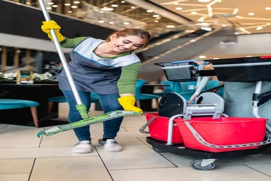
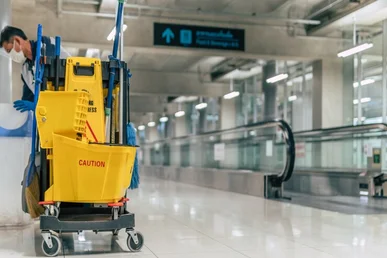

Nettoyage des centres commerciaux Casablanca
Société de Nettoyage de centre commercial Casablanca
Société de nettoyage centre Commercial Casablanca , les centres commerciaux sont fréquentés au quotidien par des milliers de personnes, la propreté est donc un enjeu primordial pour ces grandes surfaces.
L’objectif quotidien de la direction du centre est de créer du lien avec les consommateurs, offrir des conditions idéales pour une revisite et ainsi fidéliser la clientèle. Une galerie marchande propre procure une sensation de bien-être et favorise l’acte d’achat. Vous avez alors besoin d'une société de nettoyage Casablanca , réactive et de confiance. Tout au long de la journée, nos équipes assurent un service optimal afin de maintenir ces lieux propres en s'adaptant au parcours client et sans gêner le public.
En effet, le nettoyage et l’entretien des galeries commerciales est indispensable et doit être effectué avec beaucoup de rigueur et professionnalisme. Nos équipes sont de véritables ambassadeurs de la propreté, responsables de la mise en valeur de vos établissements.
Le défi nettoyage dans un centre commercial est de maintenir une propreté parfaite toute la journée sur tous les types d’espaces.
La société de nettoyage Casablanca qui vous accompagne doit pouvoir assurer ce service de façon irréprochable. Et vous devez pouvoir compter sur la réactivité des équipes d’agents d’entretien.
De plus, l’amplitude horaire d’un complexe commercial importante. Un centre généralement ouvert de 8h30 à 22h. La plage horaire destinée au gros entretien et la mise à blanc démarre à partir de 6h et se termine peu de temps après l’ouverture du centre pour ne pas déranger les clients.
Et tout comme les villages de magasins d’usine, les galeries commerciales ont des jours exceptionnels d’ouverture :
Alors, les jours fériés, les dimanches, etc. Des renforts doivent être organisés avec les agents de nettoyage pour que le centre reste propre. Ce mode de fonctionnement spécifique aux centres commerciaux amène souvent l’installation sur place d’une régie propreté pour intervenir dans les plus bref délais en cas de besoin.
Ensuite, les agents d’entretien de la société de nettoyage Casablanca sont formés à un large panel de méthodes de nettoyage pour être capable d’agir dans toutes les zones du centre et sur toutes les problématiques de propreté : Mise en place du nettoyage intelligent en fonction du parcours client.
Utilisation de produits éco responsables et adaptés au traitement des différentes surfaces Entretien des locaux administratifs du centre : nettoyage courant avec attention particulière sur le nettoyage et la désinfection des appareils informatiques.
désinfection des points de contacts, aspiration et lavage des sols. Nettoyage des ascenseurs : retrait des affichages sauvages et chewing-gums, astiquage des commandes, miroiterie et portes, aspiration des rainures et balayage sur le solSociété de nettoyage centre Commercial Casablanca
Cependant, le Nettoyage du local poubelles avec une solution 3 en 1 : bactéricide, désinfectante et désodorisante. Lavage des escalators et travolators : lavage mécanisé des paliers, plaques d’accès et marches cannelés.
- essuyage humide soigné des mains courantes, garde-corps et rampes avec une solution désinfectante.
- Entretien de l’aire de jeux enfants : essuyage humide désinfectant du mobilier et des jeux, balayage et lavage manuel désinfectant des sols.
- Entretien des parties communes (stand accueil, zones de repos, sas, escaliers publics) :
- enlèvement des détritus et papiers dans les jardinières et espaces verts intérieurs, gestion des déchets.
- Essuyage humide des meubles et objets meublants, désinfection points de contact, lavage mécanisé des sols.
- Nettoyage des sanitaires publics : approvisionnement des consommables.
- Vidage et essuyage des poubelles, désinfection des toilettes, boutons de chasses d’eau et équipements, miroiterie, détartrage, lavage et désinfection des sols. Les sanitaires doivent être un espace parfaitement hygiénique et entretenu.
Mise en propreté de l’espace extérieur : ramassage des déchets, vidage des cendriers, nettoyage des bornes de paiement, nettoyage courant du parking. Sachez que nous sommes aussi très attentifs au quotidien à la gestion des déchets au travers de plusieurs missions :
Ensuite, Le ramassage de tous types de détritus, résidus, cartons, encombrants, débris, etc
On est des spécialiste du nettoyage de centre commercial a Casablanca
Il faut savoir que tous les espaces du centre commercial n’ont pas la même nature de sol. Marbre, ciment, carrelage, bitume, ciment peint, moquette, caoutchouc, résine, etc :les techniques de notre société de nettoyage ainsi que les produits utilisés ne sont pas les mêmes. Les agents d’entretien de la société de nettoyage Casablanca. Reconnaissent les différents matériaux et choisissent les détergents adaptés pour la réalisation de la prestation. Il en est de même pour la périodicité des travaux de nettoyage : il n’est pas nécessaire de nettoyer et traiter toutes les surfaces au quotidien.
Chaque jour, les agents de service réalisent un nettoyage courant. Balayage, lavage, dépoussiérage, désinfection, essuyage des vitres…
Ce sont des tâches récurrentes mais facile à réaliser et facile d’accès notamment pour la vitrerie intérieur et extérieur qui représente une surface jusqu’à 350m². L’aspiration des tapis de sol aussi faite tous les jours tout comme la récolte des déchets. Une fois par semaine, les enseignes et suspensions qui se trouvent dans la galerie commerciale sont dépoussiérées et une fois par mois ce sont les écrans digitaux.
En fin, nos agents nettoient aussi mensuellement les sols spécifiques : décapage des sols sanitaires, au shampoing moquette, etc.
Les travaux trimestriels sont concentrés sur le dépoussiérage des rideaux métalliques du centre. Le cirage des sols parquets également fait tous les 3 mois. Le parking aussi nettoyé et dépoussiéré. Puis une fois par an, les équipes de la société de nettoyage sur Casablanca ont pour mission des travaux complémentaires plus importants :
huilage des sols des zones de repos, lavage des bardages métalliques intérieur, remise en état du sol de l’aire de jeux, etc. Nous organisons ces travaux à l’avance pour disposer de toutes les ressources nécessaires en temps et en heure.
ou consultez notre articles sur comment trouver une femme de menage a casablanca et les 5 raisons de faire appel à des experts pour votre nettoyage commercial.
Demander un rappel
Entrez vos coordonnées dans le formulaire et nous vous rappellerons.
Pour le nettoyage Résidentiel et Commercial
Notre personnel est formé pour nettoyer tout ce dont vous avez besoin !